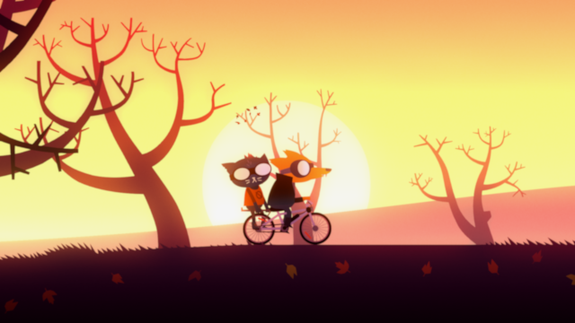
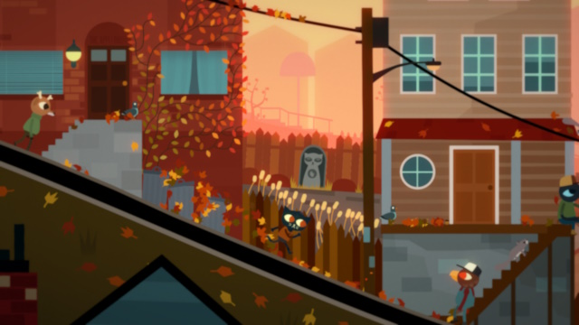
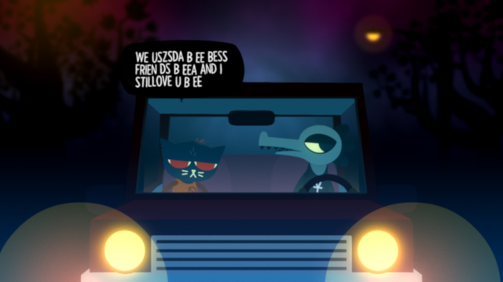
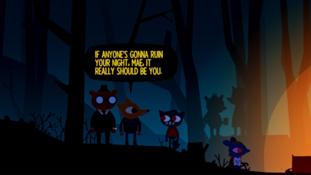
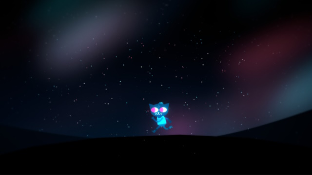

Night in the Woods

At the end of everything, hold on to anything.
I first played this game couple weeks ago, and it absolutely blew me back. Night in the Woods is an absolutely delightful game with amazing characters, writing, humor, story and music.
Night in the Woods is about a college student called Mae Borowski dropping out of college and returning back home to her hometown of Possum Springs (a town based on the Rust Belt towns of America). However her return home is abruptley disturbed by the mysterious dissapearance of one of her friends, and the discovery of a severed arm...
Mae Borowski
The main protagonist of the game, Mae is an energetic anxiety-riddled mess of a person.
Loves playing her bass and smashing things with her baseball bat.
She dropped out of college and returned home to her parents, though she doesn't wanna talk about why she dropped out.
Gregg Lee
Mae's best friend back home, a rebel who loves to cause destruction.
Despite being a rebel, Gregg has forced himself to grow up since he last saw Mae. Needing a lot of money to make his dreams come true.
Gregg plays in a band, along side his boyfriend, Angus, and Bea. Later joined by Mae after she returned home
Bea Santello
Mae's ex-childhood friend. She grew apart from Mae during highschool, and has since been stuck working at her father's hardware store.
She resents that Mae squandered her opportunity to go to university, cause she herself can't.
Angus Delaney
Gregg's boyfriend, vocalist in Gregg's band. Knows a lot about computers.
Even though he doesn't talk about it much, he didn't have the best childhood. From a neglectful father to an abusive mother, Angus had a rough time home until he was saved by Gregg.
The writing in this game is just absolutely phenomenal. Despite the fact that the cast isn't 'human', all the characters in this game feel like actual real people. The way the characters interact and talk just feels so natural. Mae Borowski is probably also my all-time favorite protagonist in any game I've played, just due to how relatable her awkward and impulsive behavior she has.
Also the music in this game is fantastic, I've been listening to it for weeks since I played the game. From the calm songs that plays in Possum Springs...
To the funky music that Mae plays during band practice..
And to the orchestral songs that play during Mae's dream sequences.
Night in the Woods just has so many great songs on its soundtrack.
A link to the Steam page for Night in the Woods.    